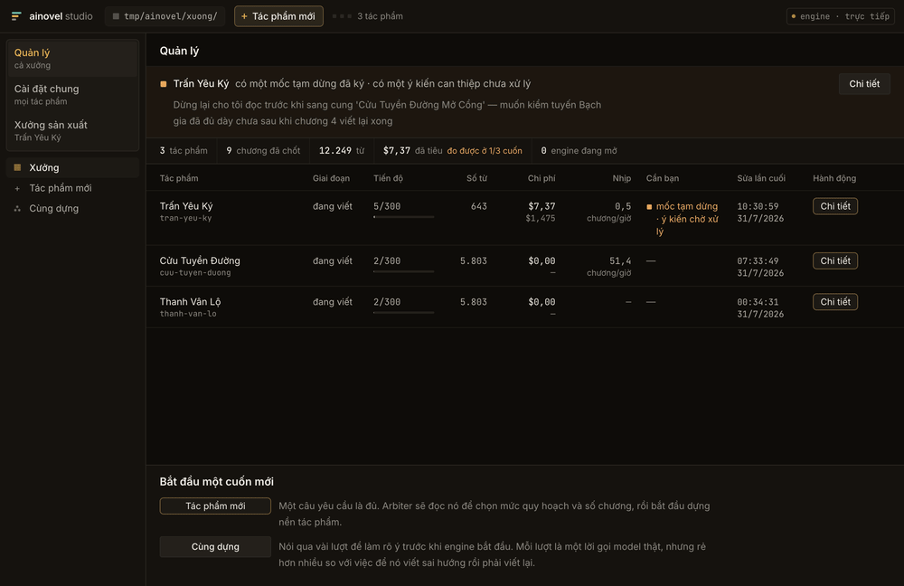
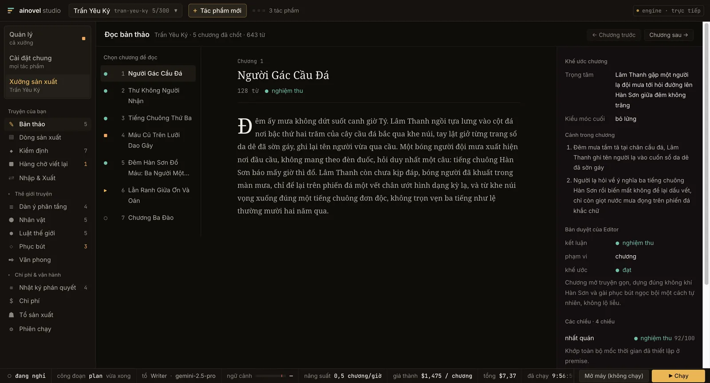
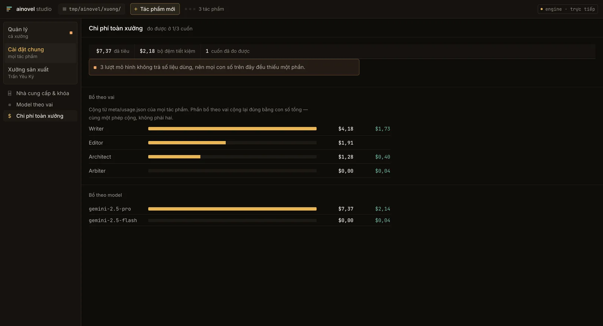

Engine viết tiểu thuyết dài,
tất định và tự động.
Một engine tất định chạy trọn một cuốn sách và chỉ gọi model ở những chỗ cần phán đoán: nó điều phối ba tác tử sáng tác tự chủ (Architect, Writer, Editor) rồi đánh thức Arbiter khi cần một phán quyết ngữ nghĩa. Vòng lặp chính không tốn một lời gọi LLM nào. Mọi phán quyết ghi xuống đĩa và phát lại được.
Miễn phí, mã nguồn mở. Không cần terminal, không cần cài Go hay Node. Cần một khóa API của nhà cung cấp model bạn dùng. Chọn tệp nào trên trang phát hành: mục 5.
1 Đặc tả số liệu đo trên bản đang phát hành
- Kiến trúc
- Một engine tất định · ba tác tử tự chủ · Arbiter gọi khi cần
- Tác tử sáng tác
- Architect · Writer · Editor
- Chiều kiểm định
- 7 (mỗi chiều buộc dẫn nguyên văn làm chứng)
- Khôi phục
- checkpoint mức step (plan · draft · check · commit)
- Quy hoạch
- Hai tầng tập–cung, mở dần theo tiến độ
- Chiến lược ngữ cảnh
- Toàn phần / cửa sổ trượt / tóm tắt phân tầng, tự chuyển
- Sức chứa
- 500+ chương
- Engine đồng thời
- 1 cuốn mỗi lần
- Nhà cung cấp model
- OpenRouter · Anthropic · Gemini · OpenAI
- Nền tảng
- macOS arm64 · macOS x64 · Windows x64
- Cập nhật
- Tự kiểm tra mỗi lần mở, tải ngầm, hỏi trước khi khởi động lại
- Lưu trữ
- Hệ tệp, một thư mục một tác phẩm
- Khóa API
- Của bạn, trên máy bạn
2 Bề mặt ảnh chụp từ một lượt chạy thật



3 Nguyên lý vận hành
Thiết kế cốt lõi: tầng sự thật thì tất định, tầng ngữ nghĩa thì tự chủ. Những chuyển trạng thái liệt kê được thì do code tất định thực thi. Những phán đoán có biên rõ ràng thì hỏi hàm LLM khi cần. Còn sáng tác mở thì giao cho vòng lặp LLM tự chủ.
Hệ quả là thứ hiếm ở một sản phẩm sinh văn bản: vòng lặp chính kiểm thử vét cạn được, vì nó không gọi model. Và mỗi phán quyết của Arbiter (chọn kiến trúc sư, phân loại can thiệp, đường ra khi bế tắc) được ghi xuống đĩa kèm sự thật mà nó dựa vào, nên nó phát lại được. Studio phơi cái vì sao đó ra thành một nhật ký đọc được, không trình bày quyết định của máy như hộp đen.
Mỗi tool chạy xong là ghi một checkpoint. Sập máy giữa chương 47 thì lượt chạy sau
khôi phục đúng vào bước plan, draft, check hay
commit mà nó đang dở. Nó không viết lại từ đầu chương, và không
mất tiền đã tiêu cho phần đã xong.
Sương chưa tan khỏi mặt cầu đá. Người gác cầu đặt chiếc đèn xuống bậc thứ ba từ dưới lên — bậc ấy khô hơn những bậc khác, và ông đã quen với việc chọn nó mà không cần nghĩ.
4 Điều kiện vận hành đọc trước khi chạy
Đây là công cụ chạy trên máy bạn, không phải dịch vụ. Những điều kiện dưới đây là ràng buộc thật, ghi ra vì phát hiện sau khi đã chạy vài giờ thì đắt hơn nhiều.
! Tiêu tiền thật
Mỗi lượt chạy là những lời gọi model thật, bằng khóa API của bạn. Dây chuyền chạy liên tục tới khi bạn dừng. Giá thành hiện ngay trên thanh transport theo đô-la mỗi chương, không phải tổng số từ để tự khen.
Chạy dài, không cần trực
Engine chạy hàng giờ đến hàng ngày. Nó được thiết kế cho việc bạn đi vắng rồi quay lại theo chu kỳ, nên studio phải trả lời trong năm giây câu "dây chuyền khỏe hay bệnh".
Một engine mỗi lần
Studio mở đúng một cuốn mỗi lần. Hai cuốn cùng chạy là gấp đôi tiền và gấp đôi RAM, và đó là quyết định của người dùng, nên mã không tự ý thay bạn quyết.
Không có bản web
App giữ khóa API và khởi động được engine, nên engine chỉ nhận lệnh từ chính cửa sổ app: nó lắng nghe trên 127.0.0.1 và không mở cổng ra mạng. Vì vậy không có bản dùng thử trên web; bản hosted sẽ là một sản phẩm khác, với những hàng rào khác.
Chưa có tiếng Anh
Giao diện, prompt và tài liệu tham chiếu đều đã việt hóa nên AI sinh truyện tiếng Việt. Giao diện app chưa qua tầng i18n nào.
5 Tải về và cài đặt
Vào bản phát hành mới nhất trên GitHub rồi tải đúng
một tệp cho máy của bạn. Các tệp .zip và .yml ở đó là để app tự
cập nhật, không cần tải.
- Mac chip Apple
- AINovel-Studio-<phiên bản>-arm64.dmg (M1, M2, M3, M4…)
- Mac chip Intel
- AINovel-Studio-<phiên bản>-x64.dmg
- Windows 10/11
- AINovel-Studio-Setup-<phiên bản>.exe (64-bit)
macOS
Không rõ chip gì: menu Apple → Giới thiệu về máy Mac này. Dòng Chip ghi "Apple M…" là chip Apple; dòng Bộ xử lý ghi "Intel…" là chip Intel.
- Mở tệp
.dmg, kéo AINovel Studio vào thư mục Applications. - Mở app từ Launchpad.
- macOS hỏi "…được tải về từ Internet. Bạn có chắc muốn mở?": bấm Mở. Chỉ hỏi một lần, vì app đã được Apple kiểm duyệt.
Windows
Bộ cài chưa có chữ ký số nên có thể gặp hai lời cảnh báo, mỗi cái chỉ một lần.
- Lúc tải, Edge/Chrome có thể báo tệp "không thường được tải xuống": bấm … (hoặc mũi tên cạnh tệp) → Giữ lại (Keep).
- Chạy bộ cài. Nếu hiện hộp xanh "Windows protected your PC": bấm More info → Run anyway.
Lần đầu mở app, nó mở thẳng màn Cài đặt → Model & khóa API. Dán khóa API của nhà cung cấp bạn dùng (OpenRouter, Anthropic, Gemini, OpenAI…), chọn model, bấm lưu là viết được ngay. Khóa và truyện nằm trong thư mục dữ liệu của app trên máy bạn, không qua máy chủ nào của dự án.
Đã dùng bản cũ? Cấu hình ở ~/.ainovel/config.json được tự chép
sang lần mở đầu tiên. Truyện cũ đưa vào bằng menu Tệp → Nhập truyện từ thư
mục….
Muốn sửa mã hay dựng app từ nguồn: xem CONTRIBUTING.md.